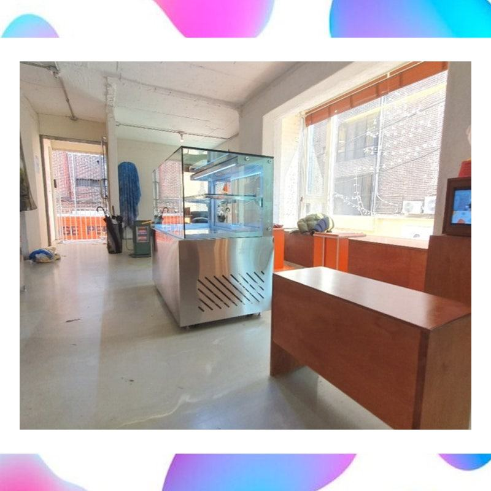
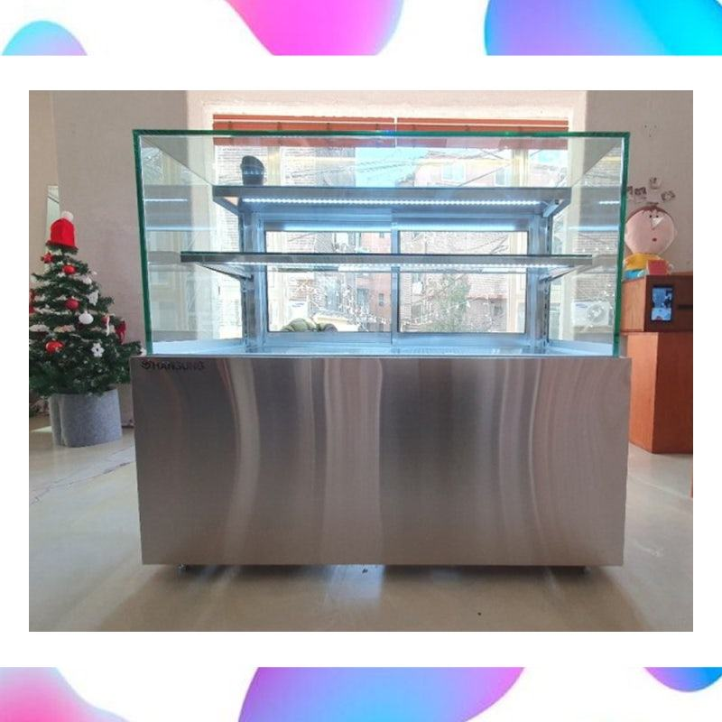
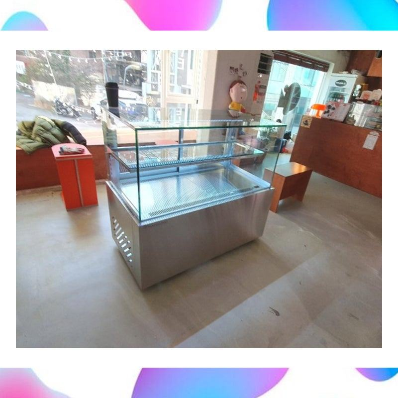
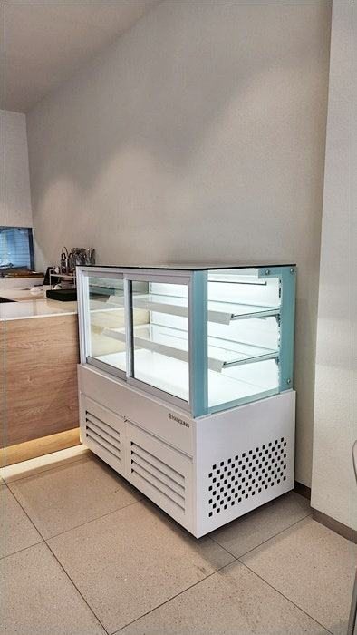

제과쇼케이스
제과쇼케이스 설치 전에 챙길 전원·통풍·반입 경로

제과쇼케이스 설치는 제품이 도착하기 전에 자리 치수, 전용 콘센트, 열이 빠질 통풍 공간, 출입문과 계단 폭을 확인해 두는 것이 전부라고 해도 과언이 아닙니다. 특히 빵집은 오븐 열과 습기가 많아 놓는 위치에 따라 결로와 냉각 성능이 크게 달라집니다.
안녕하세요. 베이커리와 디저트 매장의 쇼케이스를 상담부터 설치까지 맡고 있는 한성쇼케이스입니다.
인테리어 공사가 막바지에 이르면 사장님들께 전화가 옵니다. "쇼케이스 들어올 자리는 비워 뒀는데, 그 외에 따로 준비할 게 있을까요?"
자리만 비워 두면 될 것 같지만, 설치 날 콘센트 위치가 맞지 않거나 문틀에 걸려 제품이 들어가지 못하는 일이 생각보다 자주 생깁니다.
오픈 날짜가 정해진 상황이라면 하루 지연도 부담이죠.
오늘은 제과쇼케이스가 도착하기 전에 매장에서 미리 챙겨 두실 것들을 순서대로 정리해 드리겠습니다.
1. 자리 실측은 바닥부터
폭과 깊이만 재고 끝내시면 안 됩니다. 제과쇼케이스는 손님 쪽 유리와 직원 쪽 뒷문이 모두 있는 경우가 많아, 뒤쪽에서 문을 열고 트레이를 꺼낼 공간까지 확보돼야 합니다.
카운터 안쪽 폭이 좁으면 문을 열 때마다 몸을 비틀어야 합니다.
바닥 수평도 꼭 보세요. 타일 단차나 배수 경사가 있는 자리에 올리면 문이 저절로 열리거나 닫힘이 헐거워집니다.
높이는 카운터 상판이나 계산대와 맞출지 미리 정해 두시면 제작 단계에서 반영할 수 있습니다.
참고로 맞춤 제작한 제과쇼케이스 중에는 900×650×1200 규격처럼 작은 매장에 맞춘 경우도 있는데, 크기가 작을수록 몇 센티 차이가 진열 칸 하나를 좌우하니 실측을 꼼꼼히 해 주세요.
- 폭·깊이·높이와 함께 뒷문 여는 공간까지 재기
- 바닥 단차와 기울기 확인
- 카운터 상판 높이와 맞출지 결정
2. 전원은 전용 콘센트로
쇼케이스는 하루 종일 켜져 있는 장비라 다른 기기와 멀티탭을 나눠 쓰면 차단기가 내려가거나 콘센트가 과열될 수 있습니다.
오븐, 발효기, 커피 머신처럼 전기를 많이 쓰는 기계와는 회로를 나눠 달라고 전기 공사 때 미리 말씀해 두세요.
콘센트 위치도 중요합니다. 제품 뒷면 아래쪽에서 전원선이 나오는 경우가 많아, 콘센트가 너무 높거나 반대편에 있으면 선이 바닥을 가로지르게 됩니다.
도면을 받으시면 전원선 위치를 인테리어 업체와 공유해 두시길 권합니다.


3. 오븐 열과 통풍 공간
빵집 주방은 오븐과 발효기가 계속 열을 냅니다. 쇼케이스를 오븐 바로 앞이나 옆에 붙이면 기계실이 더운 공기를 다시 빨아들여 냉각이 더뎌지고, 유리 바깥에 습기가 맺히기 쉽습니다.
뒷면과 아래쪽 기계실 주변은 공기가 드나들 틈을 남겨 두세요. 가구로 감싸 매립하는 디자인이라면 통풍 그릴 위치를 제작 단계에서 함께 정해야 합니다.
출입문 바로 앞처럼 바깥 공기가 수시로 들어오는 자리도 결로가 잦으니 피하시는 편이 좋습니다.
- 오븐·발효기와 거리를 두기
- 기계실 앞뒤 통풍 그릴 막지 않기
- 출입문 바로 앞 자리 피하기
4. 반입 경로와 설치 당일
출입문 폭, 계단 회전 공간, 엘리베이터 크기를 미리 알려 주시면 분리 반입이 필요한지 제작 전에 판단할 수 있습니다.
인테리어 마감 전에 넣어야 하는 매립형이라면 공사 일정과 설치 날짜를 맞춰야 합니다.
설치 당일에는 전원을 켜고 바로 상품을 넣지 마시고, 내부 온도가 충분히 내려간 뒤 진열을 시작하세요.
조명 색과 선반 높이가 진열할 빵과 케이크에 맞는지도 이때 함께 확인하시면 됩니다.
설치 기사님이 돌아가기 전에 문 닫힘, 수평, 조명 점등을 사장님이 직접 한 번씩 확인해 두시면 영업 시작 후 손볼 일이 줄어듭니다.
체크리스트
- 설치 자리 치수와 뒷문 작업 공간
- 바닥 수평과 단차
- 전용 회로 콘센트와 전원선 위치
- 오븐·출입문과의 거리, 통풍 그릴
- 출입문·계단·엘리베이터 폭
현장에서 자주 보는 경우: 크림 든 디저트를 진열하는 매장
요즘 디저트 쇼케이스 주문이 늘면서 에그타르트 전문점처럼 크림이 든 상품을 파는 매장의 설치 상담도 많아졌습니다.
이런 디저트는 당일 만들어 당일 파는 경우가 대부분이라, 쇼케이스가 자리를 잡고 온도를 안정적으로 지키는지가 곧 판매와 직결됩니다.
원문에서 소개한 매장은 스텐 2단 제과 쇼케이스에 타르트를 진열했고, 보관 온도는 1~5℃ 사이를 유지하도록 안내했습니다.
오븐에서 막 나온 타르트를 바로 옮기는 동선이라면 쇼케이스를 오븐과 너무 가깝지 않으면서도 꺼내기 쉬운 위치에 두는 것이 설치의 핵심입니다.




자주 묻는 질문
설치는 인테리어 공사 중 언제 하는 게 좋나요?
바닥과 전기 공사가 끝나고 큰 먼지가 정리된 뒤가 좋습니다. 가구에 매립하는 형태라면 마감 전에 넣어야 하니 공사 일정을 미리 공유해 주세요.
설치하자마자 케이크를 넣어도 되나요?
전원을 켠 뒤 내부 온도가 설정값까지 내려가는 것을 확인하고 진열하시는 편이 안전합니다. 첫날은 온도 변화를 몇 차례 확인해 보세요.
단 수를 매장에 맞게 바꿀 수 있나요?
가능합니다. 1단부터 3단까지 진열할 상품 높이와 개수에 맞춰 구성할 수 있고, 프레임 색과 조명 색도 매장 분위기에 맞춰 정하실 수 있습니다.
매장 조건에 맞춰 만드는 한성쇼케이스
원하시는 제품 사진과 설치할 공간 사진만 보내 주셔도 매장에 맞는 구성을 추천해 드립니다.
- 전국 240여 개 A/S 전담 센터 운영
- 본사 대량 자재 매입으로 품질 대비 합리적인 가격
- 유럽제·삼성 냉각 콤프레셔 적용
- 국내 최초 쇼케이스 전문 디자이너 상주
매장 폭과 원하는 진열 구성을 알려 주세요. 실측과 견적을 안내해 드립니다.
031-986-2458